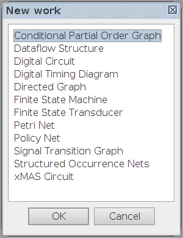
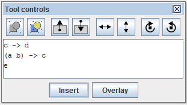

Table of Contents
CPOG plugin
Familiarise yourself with Workcraft interface to learn its common features that are available for all plugins.
The CPOG plugin provides support for the specification of a collection of behavioural scenarios, e.g., microprocessor instructions, and interfaces with the tools for their further analysis using CPOG encoding and verification techniques1).
Getting started
The plugin is currently only available for documents using the Conditional Partial Order Graph model. To create a new document of this kind click File → Create work… then select Conditional Partial Order Graph in the opened window and click OK. You can also give name to the created file as shown below.

Specification of scenarios
There are two different ways of creating scenarios: by drawing their graphical representations and by entering their algebraic descriptions. In practice a combination of both works best.
Drawing scenarios
To create a scenario, first add the events (vertices) by activating the Vertex tool  and clicking on the places where you want to place them. Then add the dependencies (arcs) between the events using the Connection tool . You can move the elements of the graph and edit their properties using the Selection tool . Finally, select the graph representing the scenario and click to create a box (group) encapsulating the vertices and arcs of the scenario inside. You will then be able to label the scenario. If you wish to edit the scenario later click
and clicking on the places where you want to place them. Then add the dependencies (arcs) between the events using the Connection tool . You can move the elements of the graph and edit their properties using the Selection tool . Finally, select the graph representing the scenario and click to create a box (group) encapsulating the vertices and arcs of the scenario inside. You will then be able to label the scenario. If you wish to edit the scenario later click  and
and  to go inside/outside the group.
to go inside/outside the group.
Repeat the above steps to add more scenarios into the document.
Algebraic scenario specification
Drawing scenarios graphically may be a tedious process, so we implemented an alternative way to create them. The Selection tool has a text box which can be used for specifying an algebraic representation of a graph2), which can then be added into the document by clicking the Insert button below it, as shown on this screenshot:

The following examples show simple algebraic expressions and describe the corresponding graphs:
a + b + c– this will insert a graph with three vertices labelled 'a', 'b' and 'c' and no arcs.a -> b + c– this will insert a graph with three vertices a, b and c and an arc going from vertex a to vertex b.a + (b + c) -> d– this will insert a graph with four vertices a, b, c and d and two arcs going from vertices b and c to vertex d.- Note that the + operator can be omitted for clarity, hence inserting the expression shown in the above screenshot will produce the following graph (after manual layout):

We plan to implement more sophisticated automated graph layout options in future versions of the plugin.
Scenario encoding
Once you have created all scenarios it is possible to automatically generate an optimal encoding for them and combine the scenarios into a Conditional Partial Order Graph. Several encoding algorithms are available; here we only look at one of them, called SAT-based optimal encoding. See the CPOG encoding plugin for a comprehensive overview of all currently supported algorithms.
Go to Encoding → SAT-based optimal encoding. This will create a new group with the synthesised Conditional Partial Order Graph and will show the computed encodings below each scenario.
SAT-based optimal encoding settings
It is important to tune the encoding tool in order to produce results of desired quality. The tool window will allow you to set the following encoding parameters:
- The number of encoding variables (note that you need at least log2(N) variables to encode N scenarios).
- The maximum number of 2-input gates in the combinational circuit computing all the conditions in the resulting Conditional Partial Order Graph.
Furthermore, you can control which SAT-solver is used for optimal encoding by navigating to Edit → Preferences… and locating the section related to the SCENCO plugin. You will be able to set the following parameters there:
- The preferred SAT solver.
- A. Mokhov, A. Yakovlev. “Conditional Partial Order Graphs: Model, Synthesis and Application”, IEEE Transactions on Computers, 2010, vol. 59, no. 11, pp. 1480-1493.
- A. Mokhov, A. Alekseyev, A. Yakovlev. “Encoding of Processor Instruction Sets with Explicit Concurrency Control”, Special Issue on Best Papers from ACSD'2010 conference, IET Computers & Digital Techniques, 2011, vol. 5, no. 6, pp. 427-439.